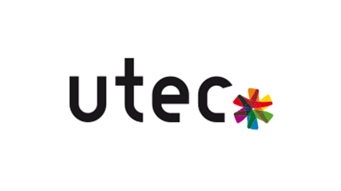
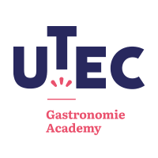
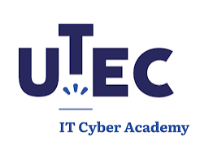

Mon école : l'UTEC

L'UTEC est l'école de la CCI de Seine-et-Marne : un Centre de Formation d'Apprentis consulaire pluridisciplinaire qui répond aux besoins en compétences des entreprises locales et insère les jeunes de 16 à 29 ans dans le monde du travail. Plus de 40 ans d'expertise en alternance, plus de 2 000 jeunes en apprentissage chaque année, 1 500 entreprises partenaires.
L'UTEC propose plus de 50 diplômes du CAP au bac+5 pour plus de 100 métiers. Je suis en BTS SIO sur le site de Melun (UTEC IT/Cyber).
4 parcours, 4 sites
Avon-Fontainebleau, Émerainville – Marne-la-Vallée, Melun et Provins.

